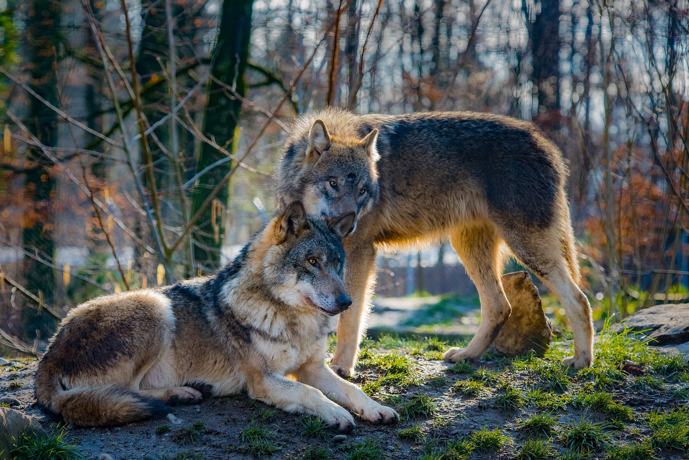
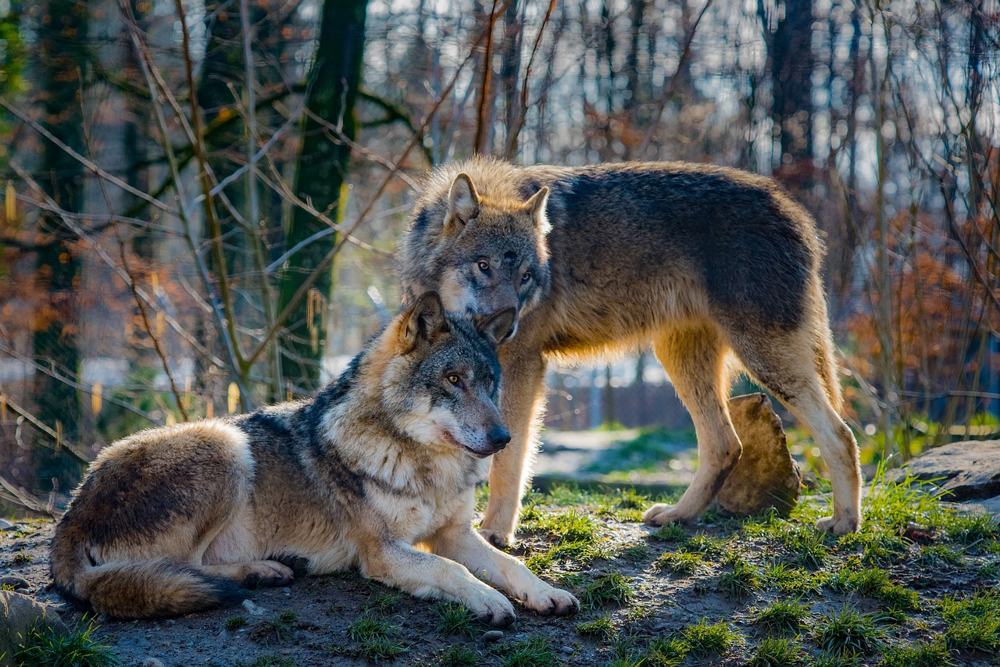
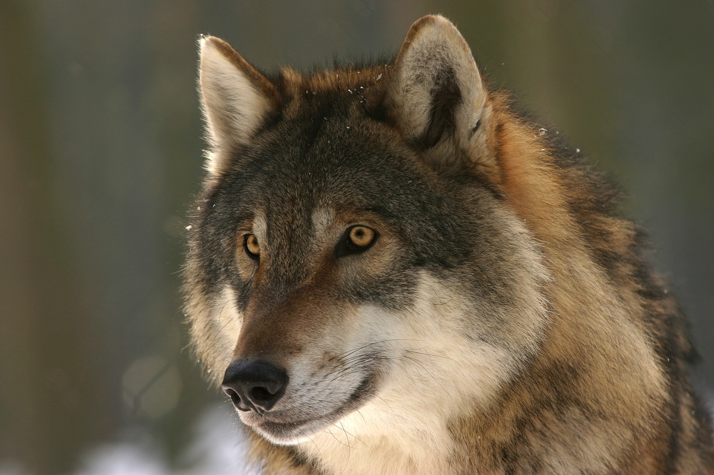
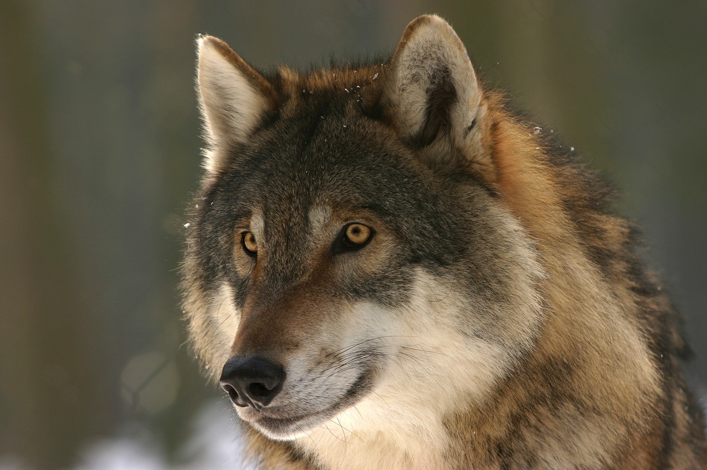

Los lobos poseen las siguientes características generales:


Rara vez un lobo anda por cuenta propia. De hecho, suelen organizarse en manadas de dos a veinte individuos, con una estricta jerarquía social, cuyo comportamiento queda en evidencia durante la cacería.
A la cabeza de la manada hay un macho y una hembra reproductores, cuyo vínculo es casi siempre monógamo, y que se denominan como alfas. Son quienes imponen el orden dentro de la manada y quienes controlan los recursos, como el orden de la alimentación.
En ocasiones, un lobo abandona su manada y forma una nueva, para lo cual deben hallar una pareja y un territorio que reclamar, ya que los lobos controlan su hábitat. Por eso es raro que un lobo traspase el territorio de otros, a menos que se trate de una manada dispuesta a reclamarlo como suyo. Otros tipos de intrusos, como perros e incluso humanos, recibirán de parte de los lobos el mismo grado de hostilidad.

 


 


Estos animales han sido de los que más extensamente se distribuyeron a lo largo del planeta, especialmente en las regiones norteñas de América y Eurasia. Pero mucho de su hábitat se fue perdiendo frente a la expansión de las comunidades humanas.
De Norteamérica, Japón, Europa occidental, Rusia e India, actualmente se conservan importantes números de lobos únicamente en Rusia. También hay pequeñas poblaciones en Groenlandia, Canadá y algunas islas árticas, China, Kazajistán, Nepal, Mongolia, así como en África y Oriente Medio.